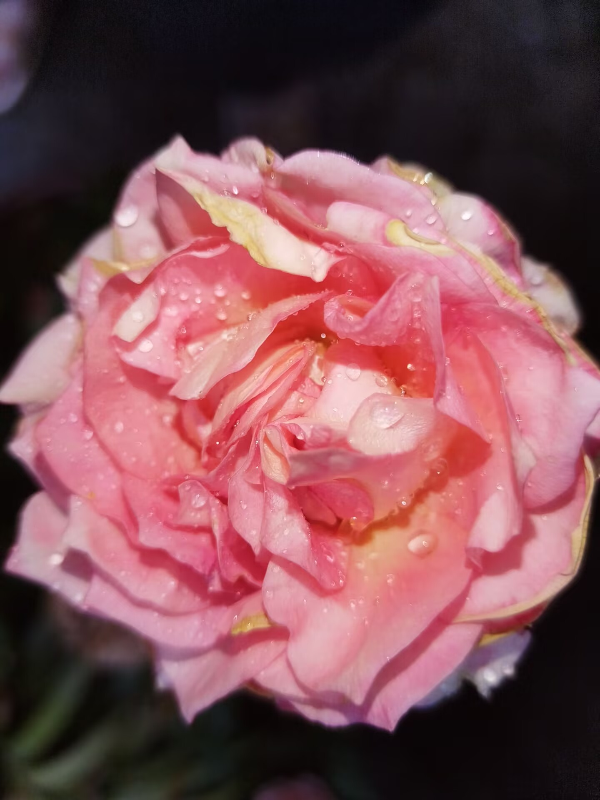

摄影展区
用镜头记录精彩，用光影传递感动
精选作品

摄影作品墙

校园春色
1080P
2024-05-01
枫叶
HD
2024-05-02
樱花
1080P
2024-03-16
创意摄影
HD
2025-07-20
自然风景
4K
2024-05-05

月季花
1080P
2024-05-06
摄影师介绍
张同学
首席摄影师
专注于校园风光摄影，擅长捕捉自然光影，作品多次获得校级摄影比赛奖项。
作品 25 幅
获赞 156
李同学
活动摄影师
专注于活动记录和人物摄影，善于捕捉精彩瞬间，为部门活动留下珍贵影像。
作品 18 幅
获赞 98
王同学
创意摄影师
擅长创意摄影和后期处理，作品风格独特，多次在摄影比赛中获得创意奖项。
作品 22 幅
获赞 134